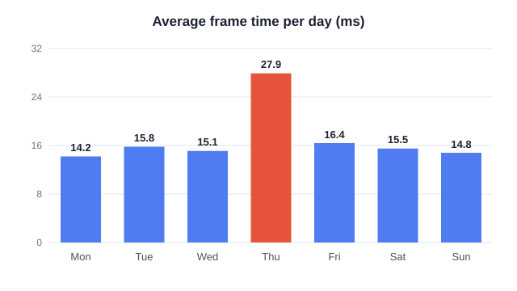

Profiling · 4 min read
The frame budget
At 60 frames per second, every frame has 16.7 ms. Everything the game does for one frame must fit inside that time.
Where the time goes
The CPU and the GPU work at the same time, on different frames. While the GPU draws frame 10, the CPU already prepares frame 11. So the frame takes as long as the slowest of them, not the sum.
| Target | Frame rate | Frame time |
|---|---|---|
| Console, cinematic | 30 fps | 33.3 ms |
| Console, performance | 60 fps | 16.7 ms |
| High refresh monitor | 120 fps | 8.3 ms |
A week of numbers
We measured the test level every day with the same camera path. One day stands out.

How to measure
To measure in code, time the work on both sides of it:
const double Start = FPlatformTime::Seconds();
RunTheWork();
const double Ms = (FPlatformTime::Seconds() - Start) * 1000.0;
UE_LOG(LogTemp, Log, TEXT("Work took %.2f ms"), Ms);The team
The people who made the numbers, at the park on Saturday.